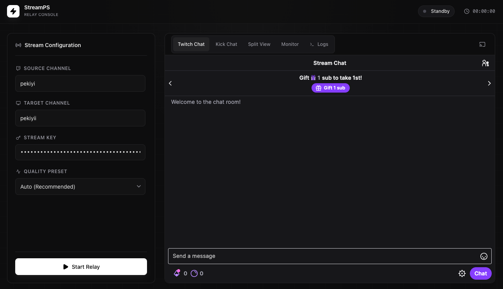

PS5, Xbox, and OBS users can't stream directly to Kick. StreamPS relays your live Twitch stream to Kick in real time — no re-encoding, no extra hardware.

StreamPS sits between Twitch's HLS output and Kick's RTMP ingest. FFmpeg does the heavy lifting — we just make it easy.
Start your stream from a PS5, Xbox, or OBS as you normally would. StreamPS works with any Twitch channel.
Paste your Kick stream key (Settings → Stream Key). StreamPS auto-detects the right RTMP server for your region.
StreamPS pulls from Twitch's HLS feed and pushes straight to Kick. No re-encoding — your CPU barely notices.
Built for streamers who want reliability over complexity.
If the relay drops mid-stream, StreamPS automatically retries up to 5 times — no need to babysit it.
Twitch and Kick chat merged into a single real-time feed. Or view them side-by-side — your call.
Real-time FPS, bitrate, encoding speed, and viewer counts for both platforms shown in the header.
Every log line timestamped and surfaced in a live terminal tab. Debug connection drops instantly.
Close the window without killing the relay. StreamPS keeps running silently in the background.
Detects your Kick region automatically from your stream key (US East, US West, EU West).
Choose Auto, Source, 720p60, 720p, or 480p. Auto picks the best quality Twitch is broadcasting.
Update your Kick stream title directly from the app, without opening a browser.
Free for personal and non-commercial use.
Right-click → Open on first launch to bypass Gatekeeper (app is unsigned).
Download .dmgFFmpeg is bundled — no separate install needed. · All releases →